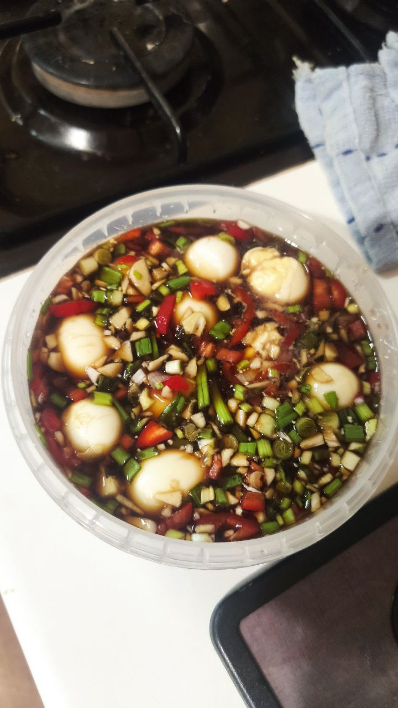

Mayak eggs (marinated eggs)

Description
A perfect snack full of umami and flavor!
These marinated quail eggs are spicy, sweet, salty, and full of umami! They are easy to make and will last in the fridge for a few days (unless you eat them sooner, of course)!
Ingredients
- Quail eggs (around 20)
- Salt
- Vinegar (of any kind)
- Chili pepper
- Sesame seeds (about 1 tsp)
- Green onion
- Honey
- Garlic (around 6 cloves)
- Soy sauce (half a cup)
- Water (half a cup>)
Steps
- Put a pot which all the eggs will fit in on high heat, add a pinch of salt and a splash of vinegar to it, and put in the eggs
- When the water starts to boil, reduce the heat to minimum and start the timer for 1 minute (no more!)
- After one minute, put all the eggs into a bowl of cold water and put the bowl under running water for around a minute
- Peel all the eggs and set them aside
- Mince garlic, finely cut chili peppers (use gloves!) and green onions
- In a container, mix soy sauce, water, a teaspoon of honey, sesame seeds, and all the chopped ingredients
- Add the eggs to the mixture and let rest in the fridge for at least 6 hours!